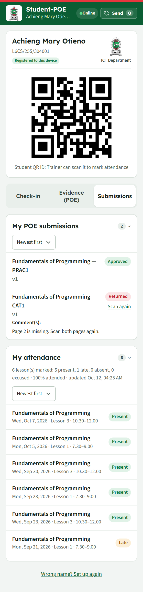

Registers in seconds
Pick the lesson on the weekly timetable and tap through the class. Doubles, CATs and lunch-hour sessions are handled.
The ARK is the department's Academic Records Keeper. Trainers mark attendance and enter marks on their phones, students check in and send their POE evidence, and the HOD and MIS Officer see it all, even when there is no network.
Mark registers in the lab or workshop with no network; they are sent when it returns.
Open the link and add it to the home screen. Nothing to buy, no app store.
The general class register and the marksheet, ready in Excel or as a PDF.
On the college's own free accounts. No subscriptions, no paid services.
From the first lesson of the term to the HOD's approval, The ARK replaces paper registers, lost CAT scripts and end-of-term spreadsheets.
Pick the lesson on the weekly timetable and tap through the class. Everything is saved on the phone at once.
The student app lives on their own phone. It records check-ins with no network and sends them later.
Lessons marked against lessons due, attendance rates and registers waiting for approval, on a phone or a computer.
In one place, on every phone.
Pick the lesson on the weekly timetable and tap through the class. Doubles, CATs and lunch-hour sessions are handled.
A lesson QR code that changes every 20 seconds, or scanning ID cards. Each student phone belongs to one student.
Marked CATs and practicals become a PDF in the student's college Google Drive, shared with their trainer to approve or return.
One marksheet per unit across terms. Earlier terms lock on their own; the HOD can unlock a correction.
The 12-week register builds itself, for one stream or all of them. Export the official Excel layout or a PDF.
Students missing too many lessons, units behind on marking, and registers waiting for the HOD.
A normal day, from the first lesson to the HOD's desk.
On the timetable, on their phone. It works in the lab, in the workshop, or with no network at all.
They scan the lesson QR code, or the trainer scans their ID cards. Late and excused are one tap.
Students scan their marked CATs; the trainer previews each one, approves it or sends it back with a note.
Term registers, marksheets, absences and approvals, with copies of approved evidence kept safe.
Large buttons, clear wording, and nothing to learn twice.



Swipe to see more
Registers wait safely on the phone until there is network, and two phones of the same trainer never overwrite each other.
Staff sign in with a staff code and PIN; students' evidence lives in their college Google accounts. Each student phone is tied to one student.
Approved evidence is copied into the department's archive on a schedule, and a document changed after it was sent is flagged.
Tested with over a thousand students checking in at the same lesson start, on the college's free accounts.
No. Trainers mark registers and students check in with no network; everything is kept on the phone and sent automatically when the network returns. Sending evidence and reports from the server need internet.
No app store. Open the link in Chrome and add it to the home screen: staff use ark26.pages.dev, students ark26.pages.dev/student. After the first visit it opens offline.
Each student phone is registered to one student. The lesson QR code changes every 20 seconds and the server checks every check-in against the codes the trainer showed, so old photos and forged codes are refused.
The trainer adds them from the register and marks them straight away. They show as pending until the MIS Officer (or the HOD, for a move between streams) approves the change.
Trainers see the classes and units they teach. The HOD and the MIS Officer see the whole department. Students see only their own attendance and evidence.
Nothing. It runs on the college's own free Cloudflare and Google accounts, with no paid services.
Open the app for your role and add it to your home screen. Or try the demo first: a full copy with invented classes and students.
Want to practise first? Open the demo (staff) · Open the demo (students)